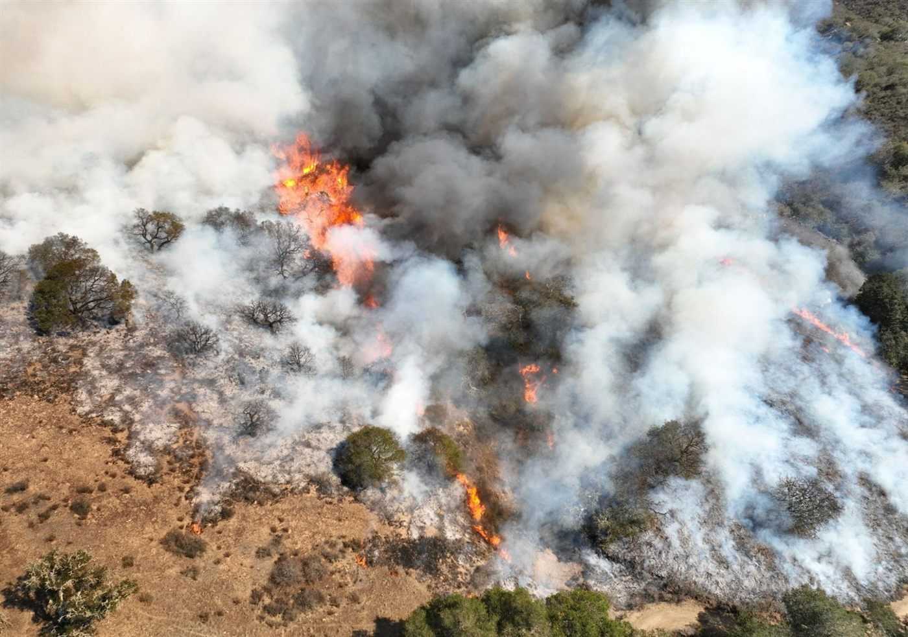

Three new papers from the canyon fire experiment
Three papers published in 2026 report results from the California canyon fire experiment, a prescribed burn carried out on 24 October 2022. GeoFly Lab flew multispectral, RGB, and thermal drone systems before, during, and after the fire, alongside airborne infrared, radar and LiDAR instruments and ground weather-tower stations. Together the three papers move from what the fire did, to what it consumed, to how its severity can be read afterward in the field.

1. Reading fire behavior from thermal drone video
During the burn, a thermal drone recorded 59 minutes of continuous video of the active fire. Thermal sensors see through smoke that defeats both the eye and visible-band cameras, so the footage captures flame intensity and rate of spread as the fire moved.
Turning that footage into data required georeferencing it frame by frame. Keyframes were extracted from the optical and thermal video every 20 to 30 seconds and tied to the ground with roughly 15 tie points each. In the opening minutes, RGB keyframes located the flame and the drone; once smoke closed over the visible bands, the thermal keyframes were georeferenced directly. In all, 127 keyframes were georeferenced successfully, covering 53 minutes, or 84 percent of the video.
The georeferenced imagery shows how differently vegetation types burn. Oak woodland reached lower temperatures than the surrounding grass and stayed cooler after the flame front passed, suggesting a degree of fire resistance. Combined stands of black sage, Ceanothus, and chamise ignited readily and burned hot.
Ren, X., Yang, B., Filkov, A., Wilkin, K., Benterou, C., Hussey, O., & Clements, C. (2026). Integrating georeferencing and fire anatomy modeling in canyon fire experiments using thermal UAV remote sensing. International Journal of Wildland Fire, WF25235. DOI: 10.1071/WF25235
2. Measuring fuel structure and what the fire consumed
The second paper uses the drone surveys that bracket the burn to measure fuel rather than flame. Digital surface models at 0.07 to 0.10 m resolution, differenced between July 2022, November 2022, and April 2023, quantify the vegetation volume lost to the fire and the regrowth that followed the next spring.
High-resolution orthomosaics support Anderson fuel-type classification across the site, and vegetation is classified using Meta’s Segment Anything Model (SAM) alongside Esri supervised image classification. The result is a repeatable way to measure fuel structure and its change over time from drone data alone.
Ren, X., Benterou, D., Allen, J., Wilkin, K. M., Brillon, H., Clements, C. B., & Yang, B. (2026). UAV-Based Estimation of Fuel Structure and Dynamics in a California Canyon Fire Experiment. Drones, 10(7), 520. DOI: 10.3390/drones10070520
3. Twig diameter as a field proxy for fire severity
The third paper tests a long-standing field shortcut: after a fire, the diameter of the smallest surviving twigs is often used to estimate how severe the fire was. Pairing field measurements with the temperature record from the experiment, the study finds that heating duration predicted fire effects better than maximum temperature. Time spent above lower temperature thresholds explained twig consumption better than brief exposure to extreme heat.
Twig diameter does work as a field proxy for severity, but the results depend strongly on the sampling method, and timing matters: weathering of twig tips can weaken the severity–diameter relationship as the months pass.
Allen, J. E., Benterou, D., Brillon, H., Yang, B., et al. (2026). Reexamining the relationship between post-fire twig diameter and fire intensity in California’s chaparral to better assess fire severity. Fire Ecology. DOI: 10.1186/s42408-026-00486-4
Acknowledgment
The canyon fire experiment was a collaboration with the Wildfire Interdisciplinary Research Center and CAL FIRE. Field data collection was led by Owen Hussey (M.A. Geography, 2025), and the thermal analysis was co-led by Dr. Xiangyu Ren. This research is supported by NASA through the FireSage program. More about the project is on our Wildfire Remote Sensing page.